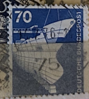
| SOURCE | TITLE| IMAGE MATCH | click to source page |
| www.ebay.com | BRD FRG #Mi852 MNH 1975 Shipbuilding Tanker Under ... | 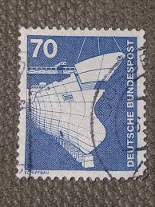 |
| www.ebay.com | Stamp Deutsche Bundespost Berlin Industry and Technology 70 ... | 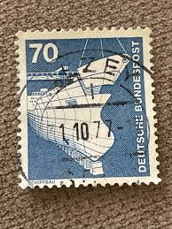 |
| www.alamy.com | Postage stamp from the Federal Republic of Germany in the ... | 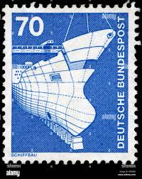 |
| www.alamy.com | Germany 1975 postage stamp hi-res stock photography and ... | 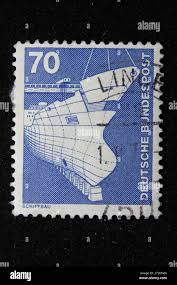 |
| www.ebay.com | Germany 1975 70pf SHIPBUILDING SC 1177 MNH | eBay | 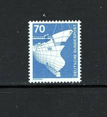 |
| www.istockphoto.com | German Ship Building Stamp Stock Photo - Download Image Now ... | 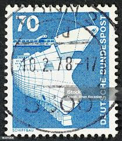 |
| www.hipstamp.com | Germany, Scott 1177, used(o), 1980, Shipbuilding, 70pfs ... | 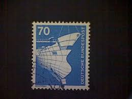 |
| findyourstampsvalue.com | BERLIN - Industry Type of Germany: Blast furnace 160pf Green ... | 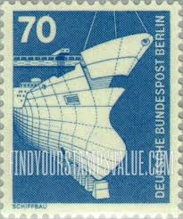 |
| www.shutterstock.com | 6+ Thousand Deutsche Post Royalty-Free Images, Stock Photos ... | 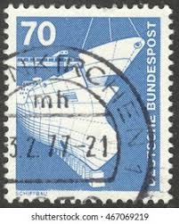 |
| www.kitantik.com | Almanya Pulu - Germany Stamp - Postadan Geçmiş Pul Filateli ... | 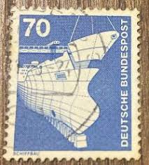 |
| www.bidcurios.com | 1975 Germany 70 Pf "Shipbuilding" MNH Stamp - BidCurios | 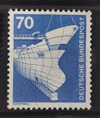 |
| www.dreamstime.com | Industry, Ship and Crane, Aspects of Malta Serie, Circa 1973 ... | 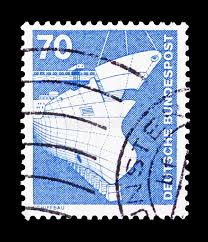 |
| en.todocoleccion.net | alemania occidental 1960, yvert 209 - Buy Antique stamps of ... | 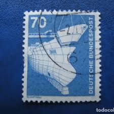 |
| www.mysticstamp.com | 158 - 1929 Canada - Mystic Stamp Company | 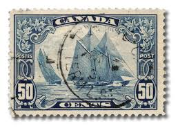 |
| www.collectorbazar.com | Germany - Used - Schiffbau- 21IU4501 | 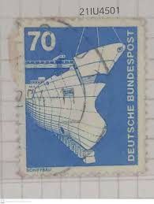 |
| www.instagram.com | Photo by Pul koleksiyonu (@koleksiyonpullar) · 2 September 2020 | 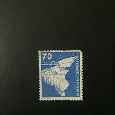 |
| www.reddit.com | What are these called? : r/philately | 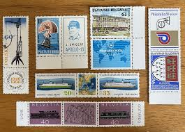 |
| www.buyhungarianstamps.com | Germany 1956 Europa – Eastern Europe Postage Stamps ... | 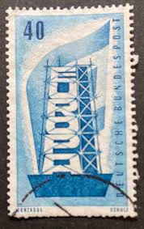 |
| www.kitantik.com | Almanya Pulu - Germany Stamp - Postadan Geçmiş Pul Filateli ... | 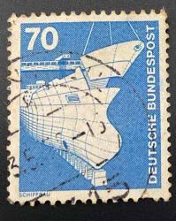 |
| oldthing.de | 852 Ind.u.Technik 70 Pf NEUE Fluo, Ecke.. | Briefmarken günstig | 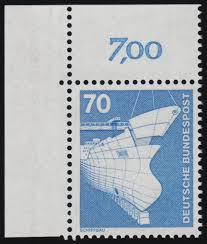 |
| www.shutterstock.com | Shipbuilding Tanker Under Construction On 1975 Stock Photo ... | 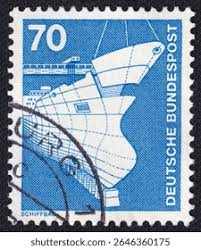 |
| www.etsy.com | 1972 Romania Posta Romana Ship Stamps – 50 Used 3.25 Lei ... | 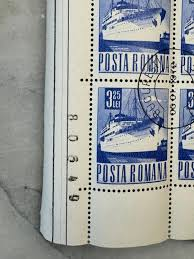 |
| www.oldmoney.kr | 사랑화폐 | 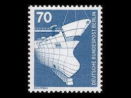 |
| aukro.cz | Německo 1975 Mi: DE 874 Série: Vánoce 1975 | Aukro | 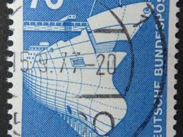 |
| www.shutterstock.com | Commemorating German Postage Stamp: Over 4,326 Royalty-Free ... | 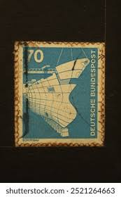 |
| www.collectorbazar.com | Germany 1975 MNH Pair, Ships, Shipbuilding - Tanker Under ... | 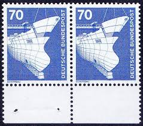 |
| anticipateinvitations.com | Nautical Vintage Postage Set (2 oz.) | Anticipate Invitations | 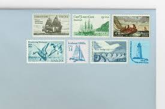 |
| www.mysticstamp.com | 733 - 1933 3c Byrd Antarctic Expedition, Dark Blue - Mystic ... | 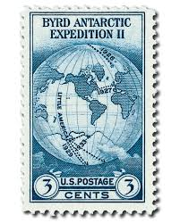 |
| www.justjerseygoods.com | Vintage NJ Stamp Card – Just Jersey | 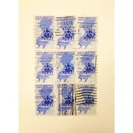 |
| www.ebay.com | WEST BERLIN # 9N366 MNH SHIPBUILDING BOATS | eBay | 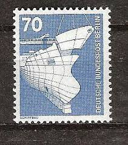 |
| littlepostagehouse.com | Frigate Constitution Vintage Postage Stamps — Little Postage ... | 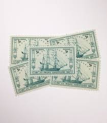 |
| stevelevinestamps-plus.com | FSAT Scott # 172, 1992 WOCE Program - SteveLevineStamps-Plus | 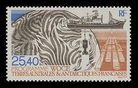 |
| www.instructables.com | DIY Postage Stamp Perforations - Instructables | 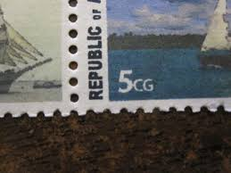 |
| www.shutterstock.com | Stavropol Russia April 04 2016 Stamp Stock Photo 400312939 ... | 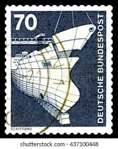 |
| www.amazon.com | Amazon.com: 1975 Complete Mint Set of Postage Stamps Issued ... | 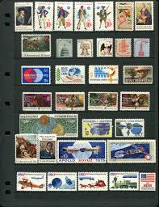 |
| www.facebook.com | German geophysicist and meteorologist birthday | 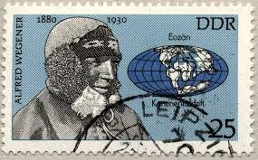 |
| oldthing.de | BERLIN DS INDUSTRIE U. TECHNIK Nr 500.. | Briefmarken günstig | 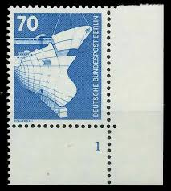 |
| www.noaa.gov | Friday Find: These 1957 stamps honored the U.S. Coast and ... | 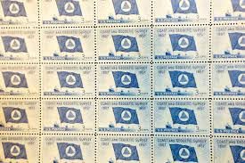 |
| www.arpinphilately.com | Buy Canada #1506a - Second World War-1943 (1993) 4 x 43 ... | 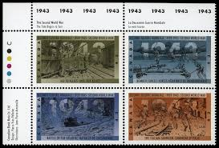 |
| worldstampsproject.org | Varieties of postage stamps of GDR: the Five Year Plan ... | 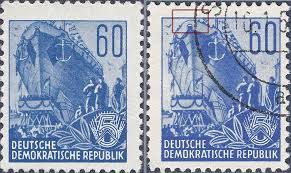 |
| www.dreamstime.com | Shipbuilding UK Postage Stamp Editorial Stock Photo - Image ... | 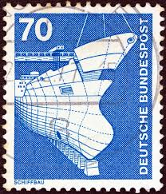 |
| www.mysticstamp.com | UN123-24 - 1964 Maritime Organization - Mystic Stamp Company | 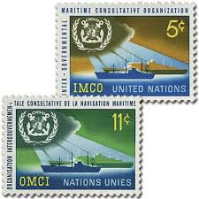 |
| www.alamy.com | Postage stamp from East Germany (DDR) in the Five-year Plan ... | 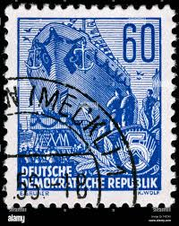 |
| postalmuseum.si.edu | Canada | National Postal Museum | 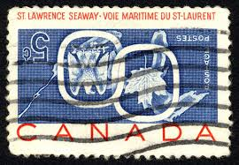 |
| www.kenmorestamp.com | France C22 UPU Cong. - 1947 MInt Airmail Issue | |
| www.stampcommunity.org | 1954 DDR Mi:dd44igXII - Stamp Community Forum | 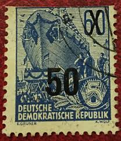 |
| commons.wikimedia.org | File:Posta Romana 1974 Ships 1.55.jpg - Wikimedia Commons | 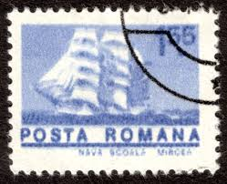 |
| www.instagram.com | Denmark collectors: a special last-day cover will mark the ... | 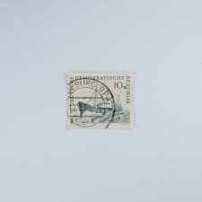 |
| russianphilately.com | 1958 Sc 2088-2090 International Geophysical Year Scott 2089 ... | 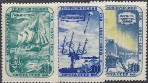 |
| www.flickr.com | beautiful old french France 5 f stamp France Marianne post ... | 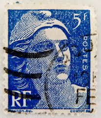 |
| www.exploregwinnett.org | Southeastern Stamp Expo 2025 | Gwinnett County, GA | |
| en.wikipedia.org | Postage stamps and postal history of the Canal Zone - Wikipedia | |
| www.hipstamp.com | Ireland #963 32p Europa - Stylized Dove, Map of Europe ... | |
| ashleybrooke.com | Where to Find Vintage Stamps for Invitations - Ashley Brooke | |
| www.reddit.com | A couple of Protectorate of Bohemia and Moravia stamps : r ... | |
| postalmuseum.si.edu | Stamp Collecting | National Postal Museum | |
| tedtalksstamps.substack.com | Graded Stamps - by Ted Tyszka - Ted Talks Stamps | |
| www.pedersonstamps.com | Allied Military Government (AMG) | Pederson Stamps | |
| richterstamps.co.za | German Democratic Republic – Richter Stamps | |
| www.italianstamps.co.uk | Italian Stamps - Trieste Zone A |
{kind=link}